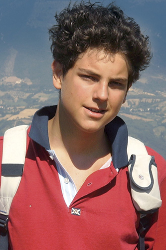
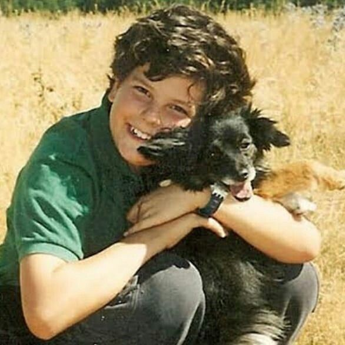
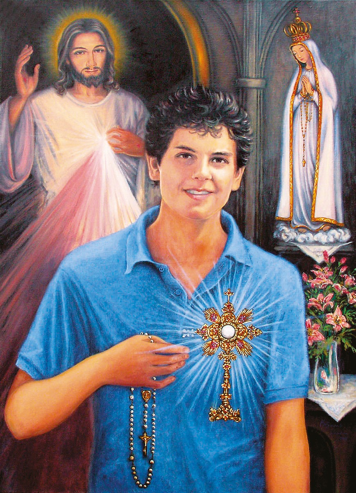
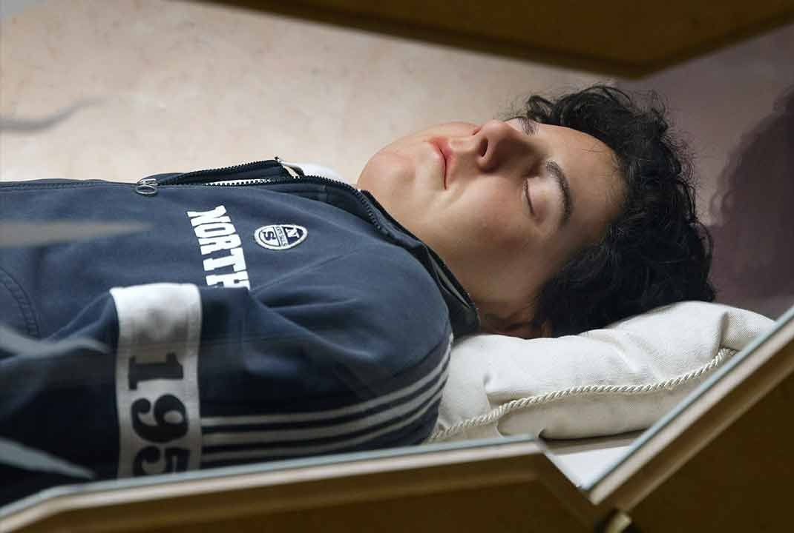
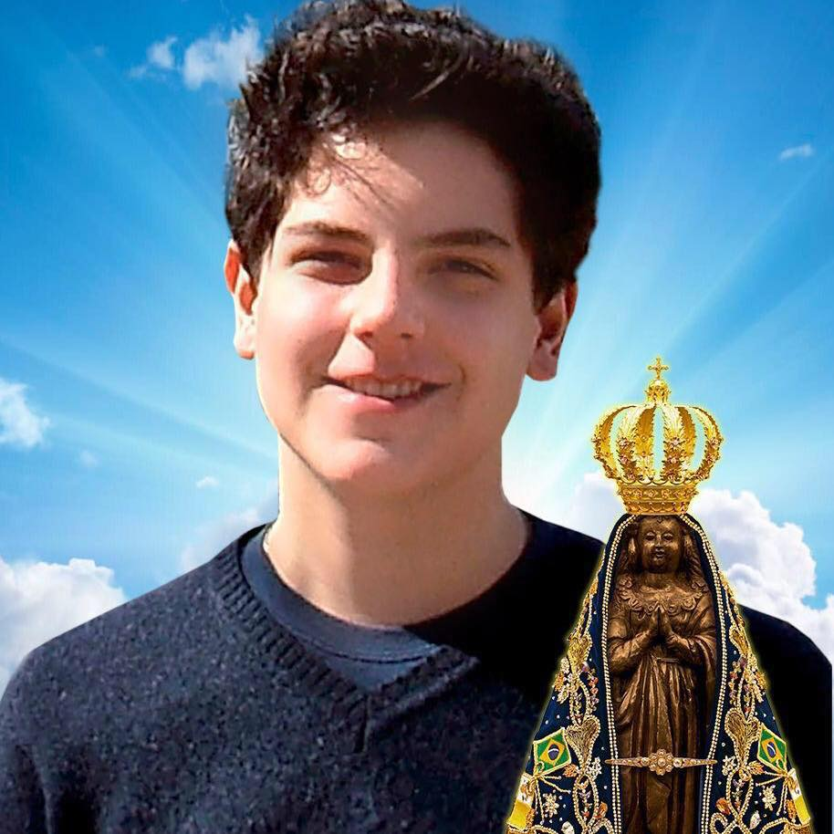
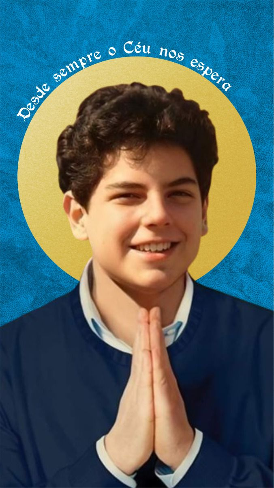

Conheça a história de São Carlo Acutis

“Todos nascem como originais, mas muitos morrem como cópias.” — São Carlo Acutis
Nascimento e Juventude
Carlo Acutis nasceu em 3 de maio de 1991, em Londres, na Inglaterra, onde seus pais, Andrea Acutis e Antonia Salzano, trabalhavam. Ainda muito pequeno, a família se mudou para Milão, na Itália, onde Carlo cresceu. Seus pais não eram muito religiosos, mas Carlo, desde os primeiros anos de vida, demonstrava uma profunda inclinação espiritual. Com apenas três anos, começou a demonstrar interesse por Jesus e pela Virgem Maria. Aos quatro, pedia para visitar igrejas e, ao passar diante de uma, queria entrar para “dizer olá a Jesus”.

Amor pela Eucaristia
Desde os sete anos, quando recebeu a Primeira Comunhão, Carlo passou a frequentar a Missa diariamente e a adorar o Santíssimo Sacramento sempre que podia. Ele dizia:
“A Eucaristia é a minha autoestrada para o Céu.”
Para Carlo, Jesus vivo na Hóstia consagrada era o centro da vida. Ele rezava o terço diariamente, lia a vida dos santos e amava ajudar os pobres.Ele colocava Jesus no centro de sua vida. Suas virtudes, como a caridade, paciência, bondade e alegria, brotavam da intimidade com Cristo Eucarístico.

O Jovem Evangelizador Digital
Apaixonado por informática, Carlo usava seus dons para evangelizar pela internet. Ele aprendeu programação sozinho, dominava softwares e linguagens complexas e chegou a montar sites, editar vídeos e criar apresentações digitais. Entre os 11 e 14 anos, desenvolveu um projeto para catalogar todos os milagres eucarísticos já reconhecidos pela Igreja. O site foi traduzido para diversos idiomas e virou uma exposição itinerante, que já percorreu mais de 17 mil paróquias no mundo. Carlo sabia que a internet podia ser um campo missionário:
“A internet pode ser usada para coisas boas, para espalhar a verdade. O problema é quando fazemos dela um ídolo.”

Doença e Morte
Em 2006, aos 15 anos,Carlo foi diagnosticado com uma leucemia do tipo M3, muito agressiva. Ele enfrentou a doença com serenidade e fé. Recusou tratamentos que causariam sofrimento excessivo e ofereceu tudo “pelos pecados dos jovens” e pela Igreja. Disse à sua mãe:
“Eu morro feliz, porque não desperdicei nem um minuto da minha vida com coisas que não agradam a Deus.”Faleceu em 12 de outubro de 2006, no hospital San Gerardo, em Monza, Itália. Foi sepultado em Assis

Beatificação e Milagre no Brasil
Após sua morte, muitas graças e conversões começaram a ser atribuídas à sua intercessão. Em 2013, iniciou-se seu processo de beatificação. O milagre reconhecido aconteceu em Campo Grande (MS), Brasil, em 2013, com um menino que sofria de uma doença congênita no pâncreas e foi curado completamente após rezar com uma relíquia de Carlo. No dia 10 de outubro de 2020, Carlo foi beatificado na Basílica de São Francisco de Assis, com seu corpo exposto incorrupto, vestido com calça jeans, tênis Nike e moletom. Um verdadeiro santo moderno.

São Carlo Acutis: O Santo Original
No dia 7 de setembro de 2025, Carlo Acutis foi canonizado oficialmente pela Igreja Católica, tornando-se o primeiro santo millennial da história. A cerimônia aconteceu na Praça de São Pedro, no Vaticano, e foi presidida pelo Papa Leão XIV. Carlo, que já era conhecido como o "padroeiro não oficial da internet", agora é reconhecido oficialmente como São Carlo Acutis, modelo de santidade para os jovens e para a era digital. Seu testemunho de fé, humildade, amor pela Eucaristia e uso da tecnologia para evangelizar conquistou o coração de milhões ao redor do mundo.
